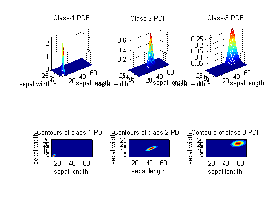
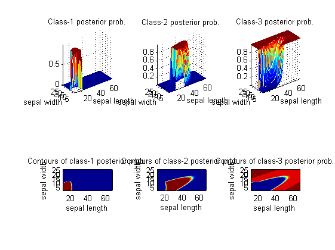
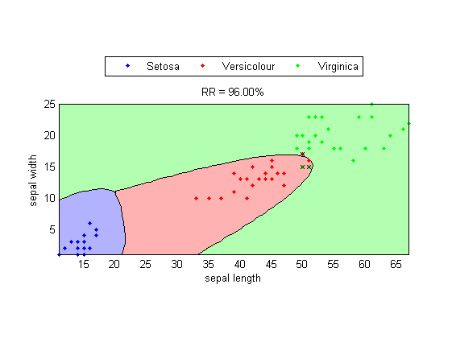
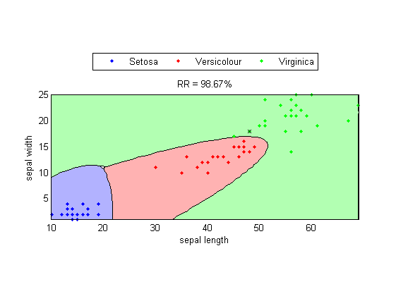

Quadratic Classifiers (QC)
If we assume that data entries in the same class of the training set are generated by a probability density function (PDF), we can use the concept of MLE (maximum likelihood estimate) to identify the parameters of the PDF. These PDFs (with each PDF for a class) can then be used to construct a classifier which can evaluate the likelihood for a data point being in a class. In practice, we usually adopt the PDF of the multi-dimensional Gaussian (normal) distribution.
Contents
A basic example
In the following example, we shall use dimensions 3 and 4 of the Iris dataset for the quadratic classifier.
[DS, TS]=prData('iris'); DS.input=DS.input(3:4, :); % Only use the last 2 dim TS.input=TS.input(3:4, :); % Only use the last 2 dim qcPrm=qcTrain(DS); cOutputDs=qcEval(DS, qcPrm); rrDs=sum(DS.output==cOutputDs)/length(DS.output); fprintf('Inside-test recog. rate = %g%%\n', rrDs*100); cOutputTs=qcEval(TS, qcPrm); rrTs=sum(TS.output==cOutputTs)/length(TS.output); fprintf('Outside-test recog. rate = %g%%\n', rrTs*100);
Inside-test recog. rate = 96% Outside-test recog. rate = 98.6667%
2-D PDFs and posterior probabilities
Once we have obtained the parameters of QC, we can plot the 2D PDF of the Gaussian of each of the class:
qcPlot(DS, qcPrm, '2dPdf');
 The 2D posterior probability function for each class can be display similarly:
qcPlot(DS, qcPrm, '2dPosterior');
 Decision boundary
Based on the computed PDF for each class, we can plot the decision boundaries along with the design set, as follows:
DS.hitIndex=find(cOutputDs==DS.output); % This is used in gmmcPlot. qcPlot(DS, qcPrm, 'decBoundary');
The decision boundaries and the test set can be plotted similarly:
TS.hitIndex=find(cOutputTs==TS.output); % This is used in gmmcPlot. qcPlot(TS, qcPrm, 'decBoundary');
As we have derived earlier, the decision boundaries should be quadratic functions in the 2D plane. The above plots do verify this fact.
Copyright 2011-2012 Jyh-Shing Roger Jang.